Scatola · S4·F2 · 87 partite
A Rotten Harvest67,8% di vittorie
🇪🇸 ES · 🇬🇧 EN · 🇫🇷 FR · 🇩🇪 DE · 🇮🇹 IT
📖 Guida di Grimlash (killer) · Guida di Shady Acres (luogo)
Grimlash su Shady Acres. Su 87 partite registrate si vince nel 67,8% dei casi, 2,5 punti sopra la media del gioco (65,3%).
Campione ridotto
Solo 87 partite registrate. Divise tra Dark Powers, Finali e Setup, ogni dettaglio ne conta pochissime: prendilo come un indizio, non come un fatto.
Cosa la rende particolare
Tracciato Harvest Madness: un cuore o cura O abbassa la follia, mai entrambi. I livelli 1-3 danno un bonus a tua scelta. Superare il livello 3 è una sconfitta immediata. I bambini rapiscono le vittime per portarle all'altare. La tensione rischio-ricompensa di quel tracciato è molto apprezzata.
| Livello | Medio |
| La mappa | I bambini sono nemici indipendenti, non Minion: se mescoli il luogo con un altro killer, le sue carte Minion non li riguardano |
Come funziona Grimlash
- Movimento base: si muove nella sua Killer Action prima di attaccare.
- Inizia con 4 di Horror e 10 di vita.
- Infligge la Harvest Madness, che dà abilità extra alla Final Girl ma alla fine causa la morte.
- Fase iniziale del Killer: Target Final Girl or Victim > Move 1 > Attack > se una Victim è stata uccisa, 1 Harvest Madness.
Riassunto dalla pagina della Final Girl Wiki (CC BY-SA).
La mappa: Shady Acres
18 spazi e 2 uscite (sud-est e nord-ovest). Spazi di ricerca: Old Barn, McCoy Farmhouse e Ralph's Garage. Sei spazi sono Field Spaces (icona del grano) e uno a nord-est è l'Altar of the Old Gods.
- I Children sono Enemies (non Minions) e agiscono nella fase del Killer prima di Minion e Killer, col loro segnalino: Target Final Girl or Victim > Move > Abduct.
- Con 1 o 2, Abduct porta una Victim e un Child all'Altar of the Old Gods e sacrifica la Victim (il Bloodlust sale come al solito).
- Ogni Victim sacrificata va in cima al mazzo Ancient Curses; dopo tre sacrifici se ne pesca una carta.
- In ogni fase di Upkeep compare un Child, a meno che non siano già tutti e tre sul tabellone o non ci siano Victims.
Carte proprie: Ancient Curses (8), Children
Riassunto dalla pagina della Final Girl Wiki (CC BY-SA).
Il killer
Grimlash ha il 77,1% di vittorie su tutte le mappe, su 210 partite. Qui, su Shady Acres, la cifra è 67,8%.
Setup
Dal più duro al più facile. Almeno 20 partite.
| Setup | Vittorie | Partite |
|---|---|---|
| Dusk Sacrifice | 44,1% | 34 |
| Harvest Season | 51,3% | 37 |
| Final Crop | 52,8% | 36 |
| Demands of the Earth | 68,0% | 50 |
| Reap What You Sow | 75,0% | 28 |
Tra Dusk Sacrifice e Reap What You Sow ci sono 31 punti di differenza. La preparazione iniziale pesa più di quanto sembri.
Dark Powers
| Dark Power | Vittorie | Partite |
|---|---|---|
| Root-bound Curse | 62,5% | 48 |
| Rite of the Corrupted | 74,0% | 50 |
| Rite of the Old One | 81,8% | 55 |
| Fields of Madness | 84,6% | 39 |
Carte Finale
| Carta Finale | Vittorie | Partite |
|---|---|---|
| God of Blood and Grain | 64,0% | 25 |
| Ancient Abomination | 75,9% | 29 |
| Unrevealed | 75,9% | 112 |
| Withered Harbinger | 86,4% | 22 |
| Hunger of the Old Gods | 90,9% | 22 |
Dove trovarla
Link di affiliazione: se compri, ricevo una piccola commissione senza costi in più per te. Non cambia quello che dicono i dati sopra.
Come iniziare la partita
Le quattro aperture, con quale usare in base alla preparazione, sono nelle strategie di apertura.
📖 Guida di Grimlash (killer)
Va bene con qualsiasi luogo. ↑ su
🩸 = Bloodlust · 🌾 = Field Space · 🎭 = aumenta l'Orrore · ⊘🎭 = abbassa l'Orrore
Errori comuni
- Grimlash si muove di 1 nella sua Azione del Killer. Quando una carta Terrore mostra l'icona dello stivale (movimento), si muove secondo il suo movimento al livello di 🩸 attuale, non di 1.
- Una cura ❤️ non cura e riduce Harvest Madness insieme: ogni cuore fa l'una o l'altra cosa.
- Quando Harvest Madness scende di un livello, perdi la carta di quel livello.
Harvest Madness 🎃 · preparazione
- Dividi le carte Harvest Madness per livello e mescola ciascun gruppo: 3 mazzi.
- Metti l'indicatore sullo spazio iniziale del tracciato Harvest Madness (bordato d'arancione), vicino alla parte alta della plancia del Killer.
Harvest Madness 🎃 · come funziona
- Ogni volta che vedi l'icona 🎃, sposta l'indicatore di 1 spazio a destra.
- Quando raggiunge un nuovo livello, pesca 2 carte dal mazzo di quel livello, tienine 1 e scarta l'altra. Il suo effetto dura finché resti a quel livello o oltre.
- Se superi il livello 3 (lo spazio col teschio), perdi la partita immediatamente.
- Quando risolvi una cura ❤️, per ogni cuore scegli: recuperi salute come al solito oppure riduci Harvest Madness di 1. Mai entrambe.
- Se scendi a un livello inferiore, scarta la carta del livello che hai lasciato. Se in seguito ci torni, pesca di nuovo 2 carte e tienine 1. Se il mazzo non basta, rimescola gli scarti di quel livello.
- Gli effetti una volta per turno si usano girando la carta a faccia in giù; torna a faccia in su nel Mantenimento.
Finales
- Finale base: punta te o la Vittima più vicina, si muove di 1 spazio e attacca. Se è stata uccisa una Vittima, 🎃 (sale Harvest Madness).
- Hunger of the Old Gods: punta, si muove di 2 e attacca 2 volte. Alla fine della fase del Killer, tutte le Vittime si muovono di 1 spazio verso Grimlash.
- Withered Harbinger: punta, si muove e attacca 2 volte. Per ogni spazio che Grimlash percorre nella fase del Killer, perdi ⌛.
- Ancient Abomination: punta, si muove di 2 e attacca. Ogni volta che risolve un attacco, aggiungi il livello di Harvest Madness al suo valore di Attacco.
- God of Blood and Grain (Finale Epico): punta te, si muove e attacca 2 volte. Quando viene rivelato, muoiono tutte le Vittime.
Poteri Oscuri
- Root-Bound Curse: ogni volta che risolvi ❤️ per curarti o abbassare Harvest Madness, Grimlash recupera metà di quei ❤️, arrotondando per eccesso.
- Rite of the Corrupted: durante il Mantenimento, 🎃 se Harvest Madness non è salito in questo turno.
- Rite of the Old One: ogni volta che Harvest Madness sale a un nuovo livello, scarta la prossima carta Terrore.
- Fields of Madness (Potere Oscuro Epico): i tuoi Tiri Orrore cambiano col livello di Harvest Madness. Livello 0 o 1: un dado in meno (minimo 1). Livello 2: nessun effetto. Livello 3: un dado in più.
- Burning Sickle (Potere Oscuro minore): ogni volta che Grimlash ti infligge danni, infligge anche ✴ a ogni Vittima nel tuo spazio.
Carte Terrore
- "Something's Wrong with the Kids": i Children considerano tutti gli spazi 🌾 adiacenti tra loro. Poi, solo i Children: puntano te o la Vittima più vicina, si muovono e risolvono l'icona delle mani (rapimento). Poi 🎭.
- "Nobody Knows Where They Take Them...": se non ci sono Vittime né Children sul tabellone, scartala e pesca la prossima. Altrimenti, vanno nel panico tutte le Vittime nello stesso spazio di un Child. Poi, per ogni Child con una Vittima nel suo spazio, risolvi l'icona delle mani come se avessi ottenuto un 1.
📖 Guida di Shady Acres (luogo)
Va bene con qualsiasi killer. ↑ su
Errori comuni
- I Children non sono Scagnozzi, ma sono Nemici: non risolvono le azioni del Killer o degli Scagnozzi sulle carte Terrore, a meno che la carta non dica che lo fanno i Children.
- Se combini Shady Acres con un altro killer, i Children restano non Scagnozzi: le carte di quel killer che citano gli Scagnozzi non li riguardano.
- Se attacchi i Children e ce ne sono diversi nello spazio, li attacchi tutti e dividi i danni; i danni in eccesso vanno persi.
- Un rapimento in uno spazio senza Vittime non va sprecato: conta come un attacco.
Preparazione speciale
- Mescola le carte Ancient Curse in un mazzo a faccia in giù.
- Metti la carta Children vicino al tabellone, un Child sull'Altar of the Old Gods e gli altri sulla carta.
- Metti il segnalino Azione dei Children sopra le azioni degli Scagnozzi o del Killer sulla carta Finale: agiscono prima di tutti gli altri Nemici.
I Children
- La loro carta indica salute, attacco e movimento. Sono Nemici, non Scagnozzi.
- Agiscono all'inizio della fase del Killer, prima di Scagnozzi e Killer, uno alla volta: prima il più vicino all'Altare.
- A ogni Mantenimento compare un Child sull'Altare, a meno che non siano già fuori tutti e tre o non restino Vittime.
- Si possono attaccare e uccidere: un Child morto torna sulla carta e può ricomparire.
- Le Vittime ti seguono in uno spazio con dei Children, a meno che non ci sia anche il Killer.
- Nella fase Panico, le Vittime in uno spazio con un Child vanno nel panico se in quel turno è stata uccisa almeno una Vittima.
Rapimenti
- Quando un Child risolve l'icona del rapimento in uno spazio con una Vittima, tira un dado.
- 1-2: la Vittima viene sacrificata sull'Altare (uccisa). Il Child torna all'Altare, 🩸 sale come al solito e la Vittima va sul retro della prima carta Ancient Curse.
- 3-6: non succede nulla.
Ancient Curse
- Con 3 Vittime sacrificate sopra, rimuovile e rivela la maledizione, che entra in gioco. Possono esserne attive diverse insieme.
Field Space 🌾
- Gli spazi con l'icona del grano sono Field Space. Molte carte di questa scatola li usano, nel bene e nel male.
Preparazioni
K = partenza del Killer · figura gialla = la Final Girl · numeri = Vittime per spazio.
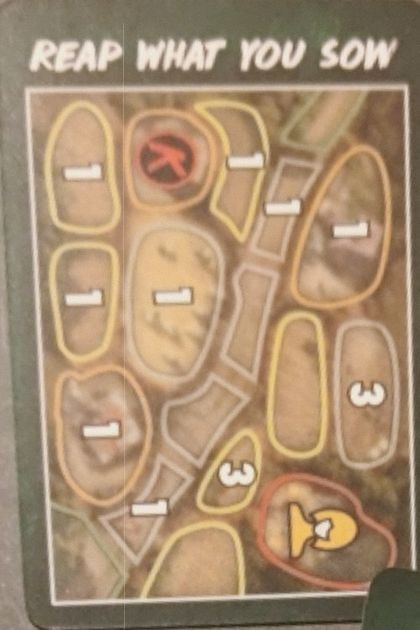
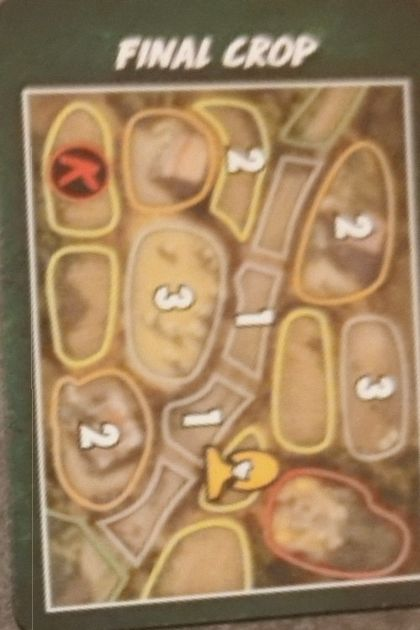
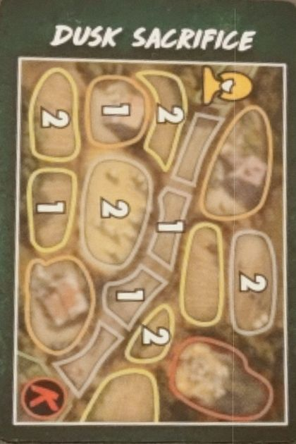
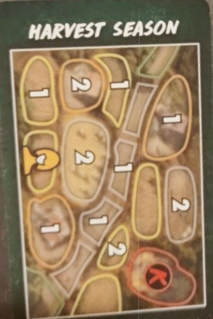
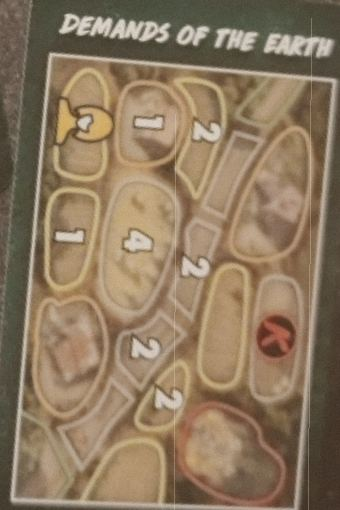
Oggetti
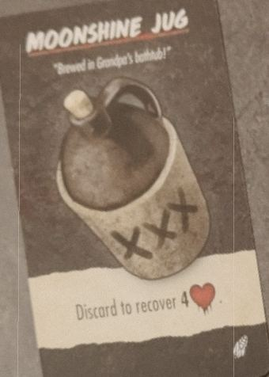
Scarta per recuperare 4 salute.
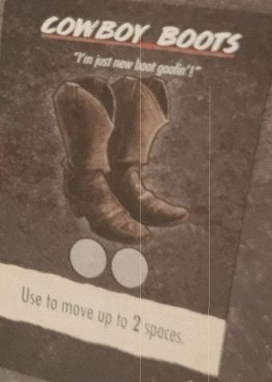
2 usi. Muoviti fino a 2 spazi.
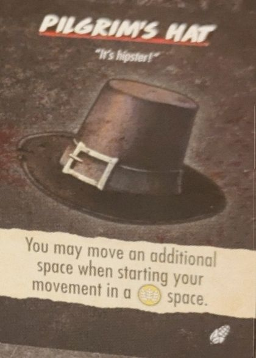
Se inizi il movimento in un 🌾, puoi muoverti di 1 spazio in più.
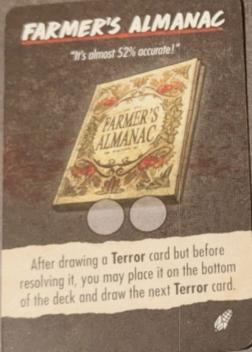
2 usi. Dopo aver pescato una carta Terrore ma prima di risolverla, puoi metterla in fondo e pescare la successiva.
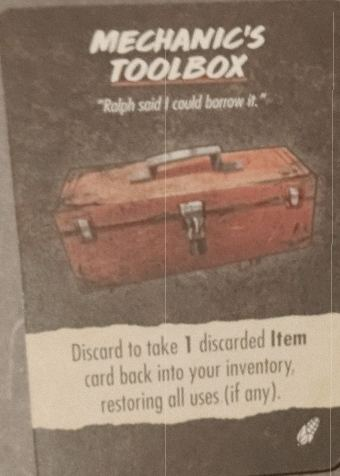
Scarta per riprendere 1 Oggetto scartato, con tutti i suoi usi.
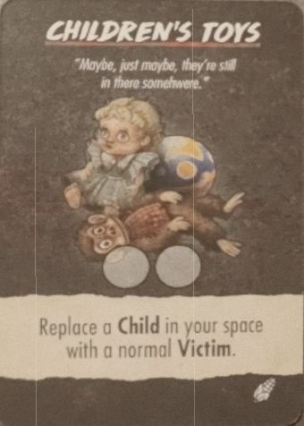
2 usi. Scambia un Child nel tuo spazio con una Vittima normale.
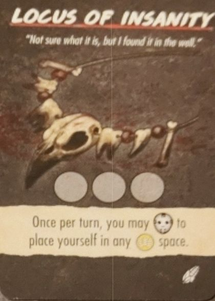
3 usi. Una volta per turno, con 🎭, puoi piazzarti in qualsiasi 🌾.
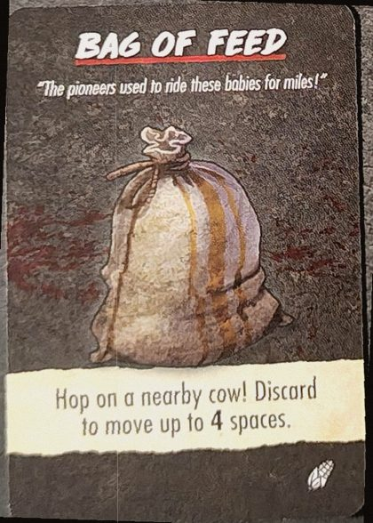
Salta su una mucca! Scartalo per muoverti fino a 4 spazi.
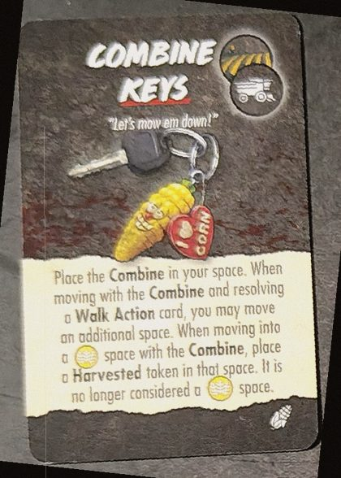
Metti la Combine nel tuo spazio. Se ti muovi con lei risolvendo una carta Azione Walk, puoi muoverti di 1 spazio in più. Entrando in un 🌾 con la Combine, metti un segnalino Harvested: non è più un 🌾.
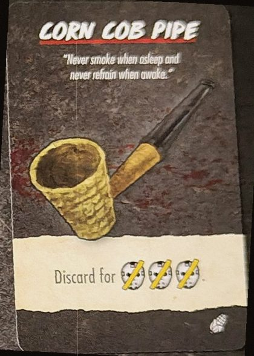
Scartala per ⊘🎭⊘🎭⊘🎭 (abbassa l'Orrore di 3).
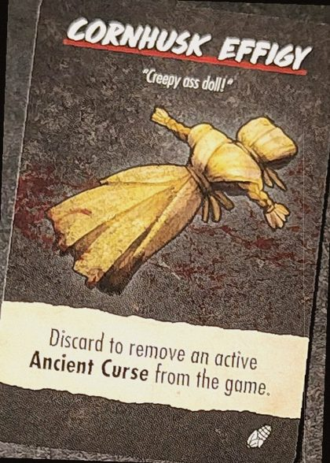
Scartala per togliere dal gioco una Ancient Curse attiva.
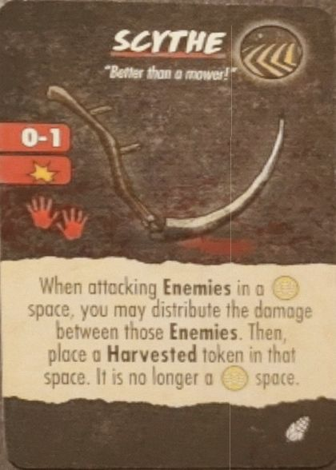
Arma · gittata 0-1 · 1 danno · 2 mani. Quando attacchi Nemici in un 🌾, puoi dividere i danni tra loro. Poi quello spazio diventa Harvested e non è più un 🌾.
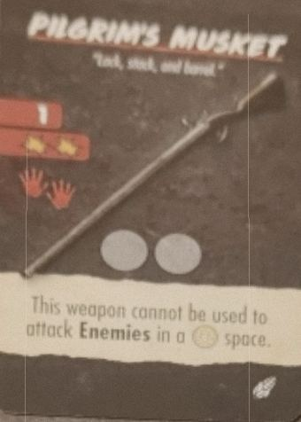
Arma · gittata 1 · 2 danni · 2 mani · 2 usi. Non si può usare contro Nemici in un 🌾.
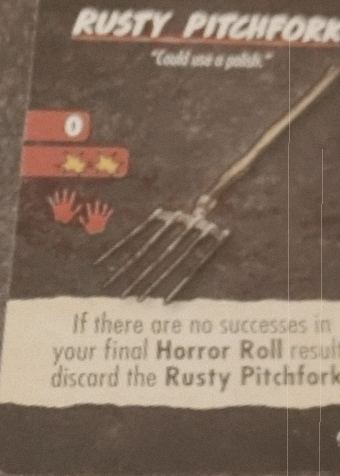
Arma · gittata 0 · 2 danni · 2 mani. Se il tuo Tiro Orrore finale non ha nessun successo, scartala.
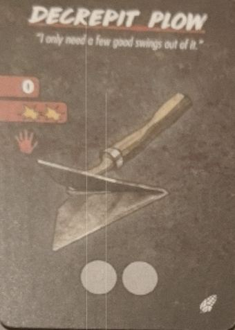
Arma · gittata 0 · 2 danni · 1 mano · 2 usi.
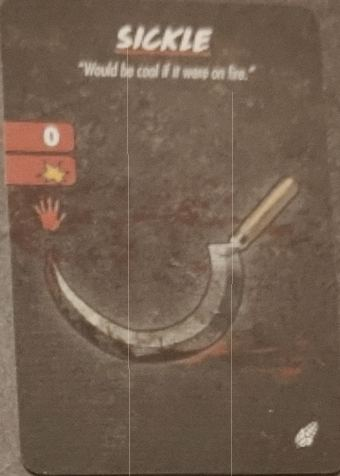
Arma · gittata 0 · 1 danno · 1 mano. Nessun limite d'uso.
Eventi di Shady Acres
- Umbral Evocation
- Metti il segnalino Harvest Shadow nello spazio del Killer. Ogni volta che tu o una Vittima ci entrate: 🩸.
- Acres of Hatred
- Per ogni 🌾 con almeno una Vittima: 🩸 (max 2). Scarta.
- “The Fields Are Moving…”
- Metti un segnalino Field su Hayfield e Cow Pasture: diventano 🌾.
- Festering Rot
- Ogni volta che una Vittima viene uccisa in un 🌾: 🎭.
- It Hungers For Us
- Tutte le Vittime vanno nel panico. Per ogni Vittima nello spazio del Killer o adiacente: 🎭 (max 3). Scarta.
- Harvest Cultist
- La Vittima più vicina a te diventa il Cultist. A ogni Mantenimento si muove di 1 spazio verso di te; se è con te, vi muovete entrambi di 1 spazio verso il Killer. Salvarlo dà una ricompensa.
- Ralph the Mechanic
- Ralph inizia nel Ralph's Garage. Finché è con te, gli Oggetti a usi limitati che prendi ottengono un uso in più.
- Sally McCoy
- Sally inizia nella McCoy Farmhouse. Quando viene salvata, cerca nel mazzo Oggetti le Combine Keys.
- It Lurks Between the Rows
- Tutte le Vittime in un 🌾 vanno nel panico. Quelle che fuggono nello spazio del Killer muoiono. Scarta.
- The Ravens Are Circling
- Ogni Child si muove di 2 spazi verso il Killer. Metti su questa carta tanti segnalini vita quanti Children nel suo spazio. Quando il Killer subisce danni, togli prima quelli della carta. Scartala quando non ne restano.
Testo nostro, dal regolamento, dalle carte e dalla wiki. Nomi delle carte in inglese. Un errore? Faccelo sapere.